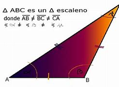

Triángulo Escaleno
Un triángulo escaleno es la forma más general de triángulo, de ahí que las consideraciones que sobre este tipo de triángulos se puedan hacer son las que sobre triángulos en general se pueden hacer.
¿Qué es un triángulo escaleno?
Un triángulo escaleno, es un tipo de triángulo que tiene sus tres lados de diferente longitud, así como sus tres ángulos son de distinta amplitud.
Los triángulos escalenos tienen que lo diferencian de los otros tipos de triángulos. Algunas de las particularidades son las siguientes:
Sus tres lados son de diferentes medidas cada uno.
Sus ángulos son de diferente amplitud.
Los ángulos internos pueden ser: ángulo agudo, obtuso o recto.
Por no tener lados iguales, no tiene eje de simetría.
La medida de sus ángulos internos es igual a 180°.
El perímetro de un triángulo escaleno se halla mediante la suma de cada uno de sus lados P=d+e+f.
El ángulo de mayor amplitud en un triángulo escaleno, es siempre el que está opuesto al lado más largo del triángulo.
